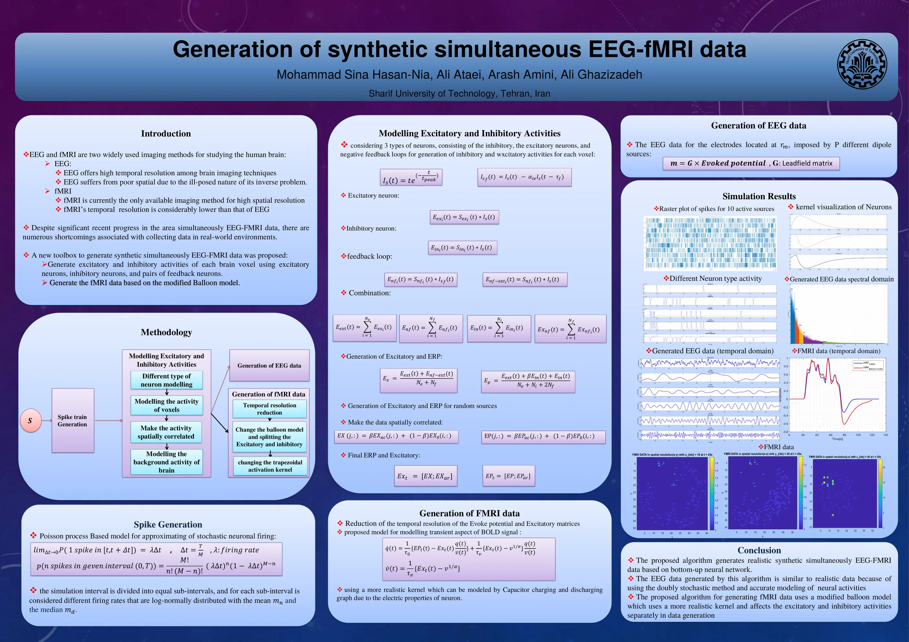
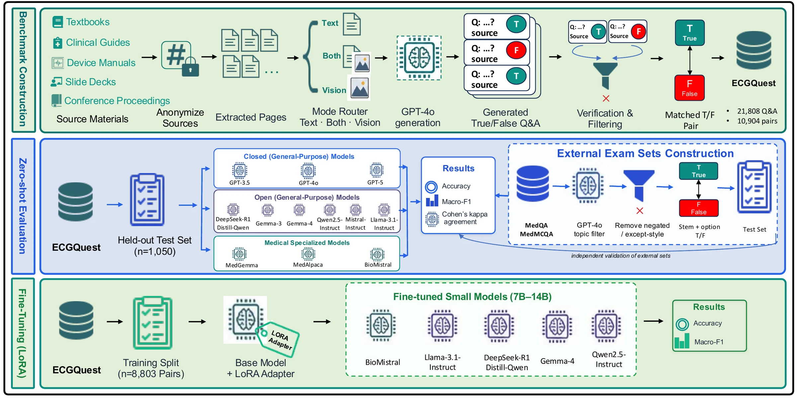
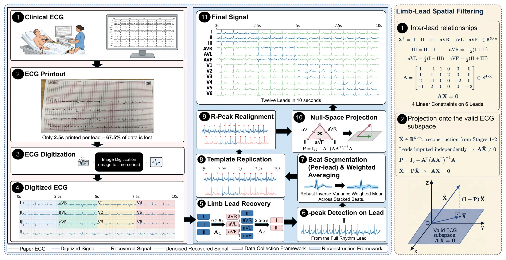
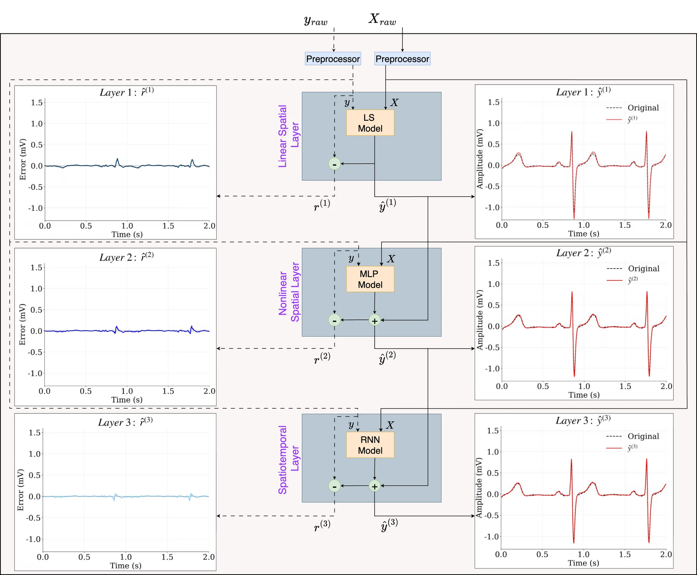
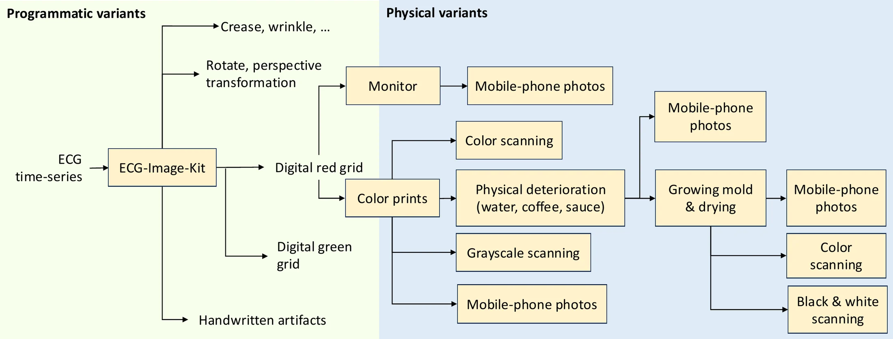
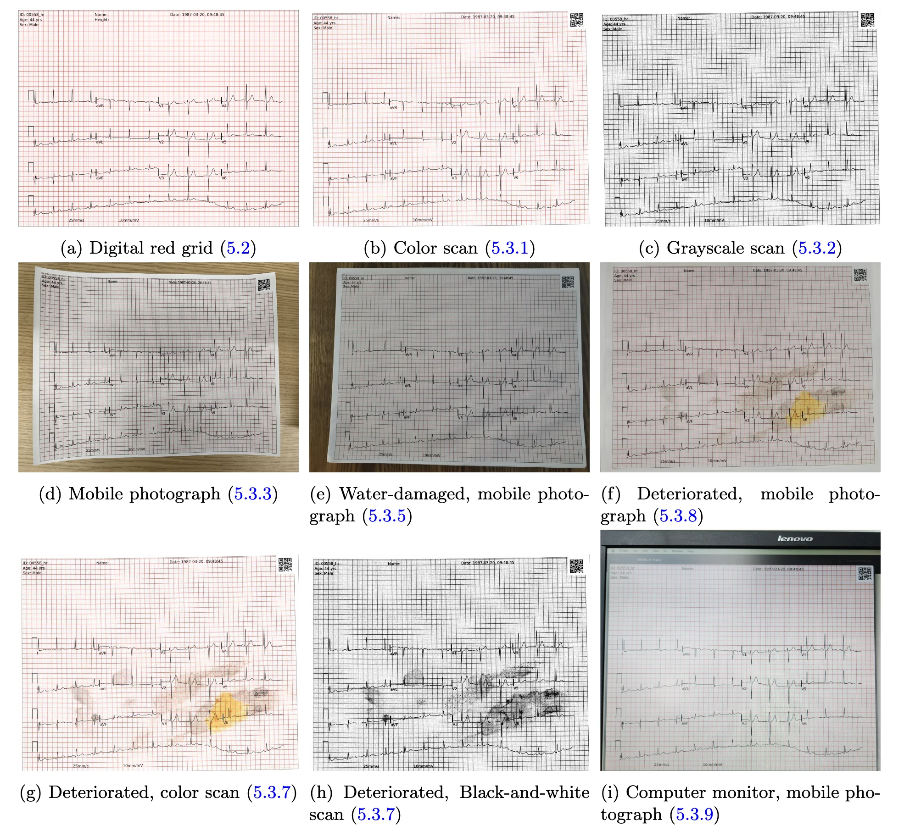

Multimodal physiological AI
Multimodal modeling of EEG, ECG, PPG, respiration, electrodermal activity, and pupillometry for mental health and healthcare applications.
Ph.D. student in Computer Science and Biomedical Informatics at Emory University. I build machine learning methods for multimodal physiological signals, from EEG and ECG to pupil size and language.
I work on machine learning, deep learning, and biomedical signal processing for healthcare. I am advised by Prof. Reza Sameni at Emory University.
My current research is multimodal physiological modeling for objective mental health assessment. It draws on EEG, ECG, PPG, respiration, electrodermal activity, pupillometry, and psycholinguistic stimuli.
Before this I modeled neural activity and simultaneous EEG-fMRI signals, built deep learning methods for ECG reconstruction and large-scale ECG analysis, applied graph signal processing to multichannel physiological data, and benchmarked and fine-tuned large language models for ECG-related medical question answering.
I was also a member of the organizing team for the George B. Moody PhysioNet Challenges, where I worked on large-scale biomedical data curation, validation, and challenge development. My broader goal is to develop reliable, interpretable, and clinically meaningful AI methods for physiological signal analysis.
Oct 2024 to present
Emory University, Atlanta, GA
Oct 2024 to 2026
Emory University, Atlanta, GA
Sep 2017 to Sep 2022
Sharif University of Technology, Tehran, Iran
Multimodal modeling of EEG, ECG, PPG, respiration, electrodermal activity, and pupillometry for mental health and healthcare applications.
ECG reconstruction and decomposition, neural activity modeling, simultaneous EEG-fMRI, temporal modeling, and graph signal processing.
Benchmarking, fine-tuning, and evaluation of LLMs for domain-specific medical question answering and clinical reasoning.
Robustness, interpretability, generalization, physiological variability, and clinically meaningful model evaluation.
Oct 2024 to present
Apr 2025 to present
Apr 2021 to May 2023
Special B.Sc. Thesis Award Chosen among 200 senior projects in 2021/2022.

2026
Journal of Biomedical Informatics
Submitted Preprint on arXiv

2026
Computing in Cardiology (CinC)

2025
Computing in Cardiology (CinC)

2025
Physiological Measurement
2025
Computing in Cardiology (CinC)
2025
Physiological Measurement


Oct 2024 to Aug 2026
Jun 2022 to Oct 2022
Fall 2023
Fall 2023
Spring 2022, Fall 2023
Spring 2022
Fall 2021, Spring 2022
Spring 2021
Spring 2019
Code from my research and coursework, all on GitHub.
An adaptive Kalman filter FIR framework that reconstructs missing ECG leads from a reduced set of leads, evaluated on PTB-XL.
Artifact removal with blind and semi-blind source separation methods: PCA, GEVD, ICA, and DSS.
MNE, WMNE, LORETA, and sLORETA source localization applied to epileptic signals.
The CSP algorithm with an SVM, separating imagined foot movement from mental subtraction.
Feature selection by genetic algorithm, with MLP and RBF networks trained on the selected EEG features.
Simulations of Hodgkin-Huxley, Izhikevich, and integrate-and-fire neurons and small neural populations, with phase-plane analysis.
Denoising with total variation, anisotropic diffusion, bilateral filtering, non-local means, and wavelets. Segmentation with K-means, FCM, BCFCM, GMM, and deformable models.
Encoder-decoder captioning on Flickr8k, comparing Inception-V3, EfficientNet-B3, ResNet, U-Net, and Vision Transformer encoders.
Two concatenated deep neural networks that detect objects and estimate depth together.
A CNN that locates 14 body joints in an image, evaluated with the PCP and PDJ metrics.
Sentiment models built with one-directional, bidirectional, and pyramid LSTMs, and with BERT.
RNN and LSTM models that denoise audio signals and images.
For research questions or collaboration, email me.
m.sinahasannia@gmail.com